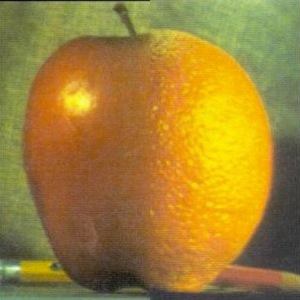
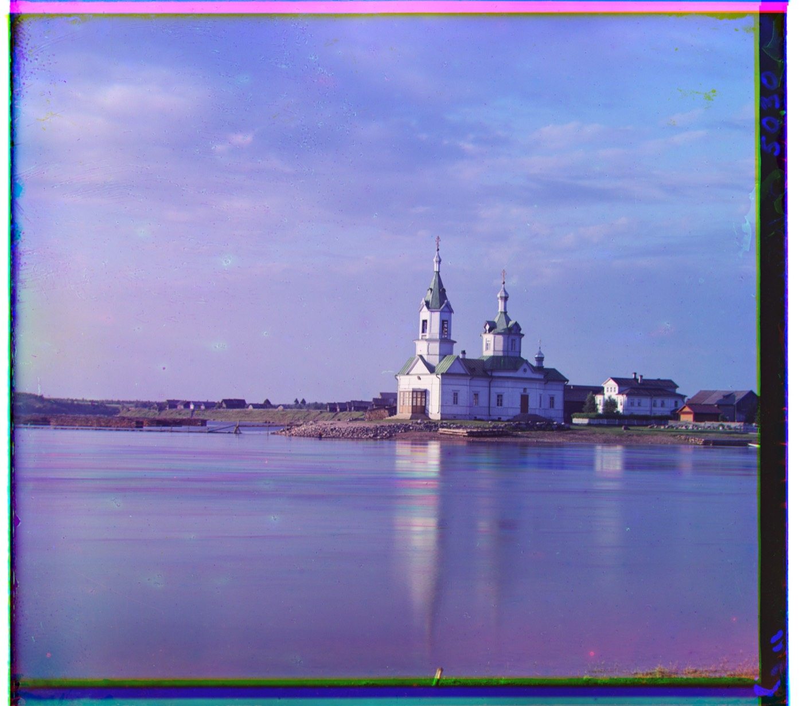
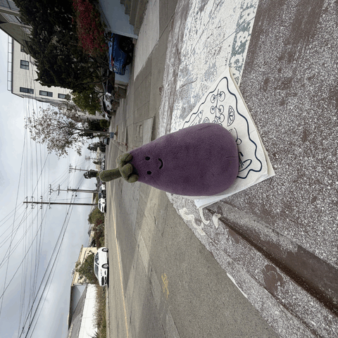

COMPUTATIONAL PHOTOGRAPHY · UC BERKELEY
A few ways
of seeing.
Five projects exploring what happens
between a camera, an image, and a little curiosity.
The projects
00—04 / take a look around
PROJECT 04
Image Warping & Mosaicing
Finding shared points. Bringing separate views together.
Homographies · Feature matching · Panoramas

PROJECT 03
Fun with Flow Models
From noise to images, and one idea into another.
Denoising · Image editing · Visual illusions

PROJECT 02
Fun with Filters & Frequencies
A closer look at the layers that make an image.
Filters · Hybrid images · Multiresolution blending

PROJECT 01
Images of the Russian Empire
Putting three glass-plate exposures back into color.
Image alignment · Color reconstruction

PROJECT 00
Becoming Friends with Your Camera
Small experiments in distance, perspective, and motion.
Perspective · Focal length · Dolly zoom